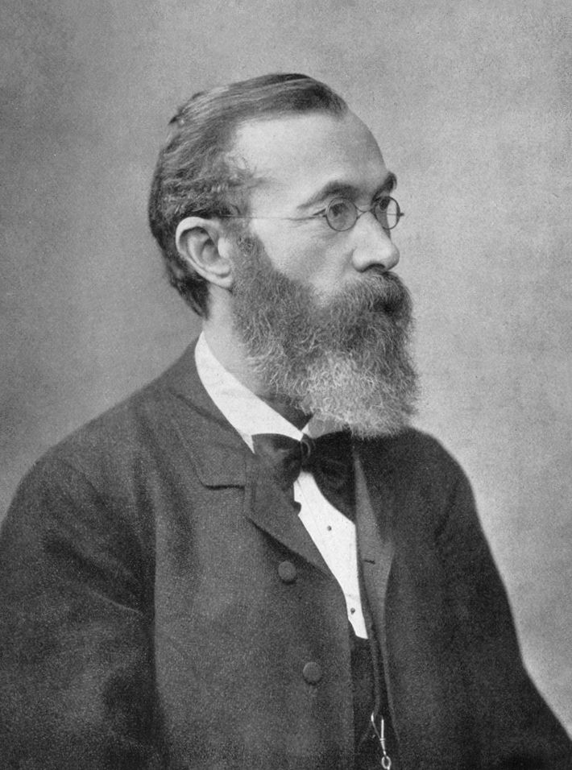
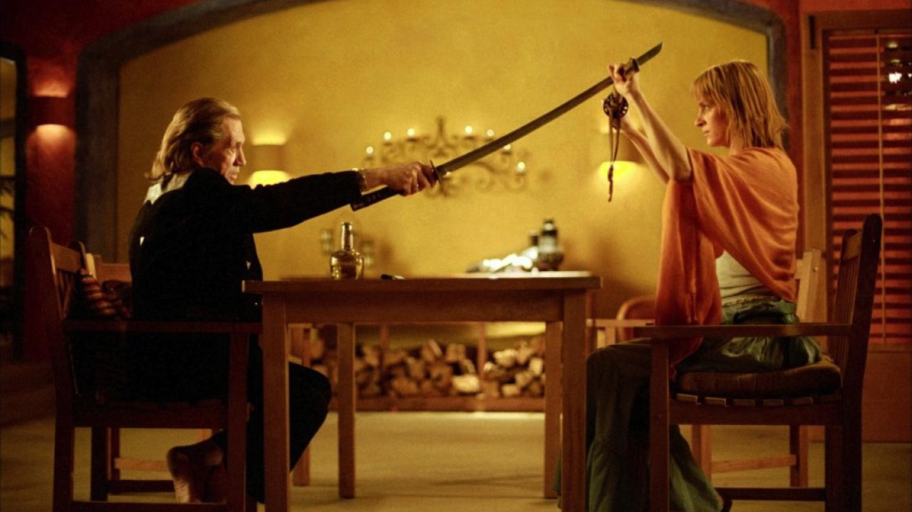
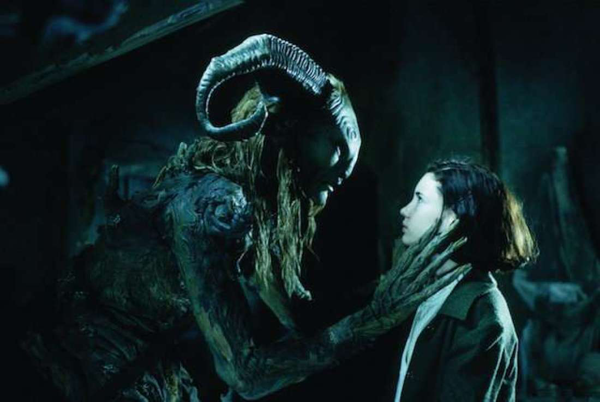

|  | O estudo de Cores Quentes e Frias: |
|---|---|
|
Wilhelm Maximilian Wundt foi um filósofo, médico e psicólogo alemão que estabeleceu a divisão fundamental entre cores quentes e frias e estudou como elas podem causar diferentes sensações sobre o observador. Ele acreditava que cores quentes são psicologicamente dinâmicas e estimulantes como a luz solar ou chamas de uma fogueira, incitando a sensação de vitalidade, alegria, movimento e excitação. Por outro lado, cores frias seriam estáticas e calmas como o gelo, trazendo a sensação de tranquilidade e suavidade. |
| Temperatura das cores: | |
|---|---|
|
A temperatura das cores é a capacidade que toda cor tem de parecer quente ou fria e, a partir disso, transmitir sensações ao observador. Pode-se dividir um círculo cromático ao meio com uma linha vertical cortando os tons de amarelo e violeta. A partir disso, é possível perceber duas metades correspondentes às cores quentes e frias. |
|  | Cores Quentes: |
|---|---|
|
Cores como vermelho, laranja e amarelo possuem todas as qualidades de calor, pertencendo ao grupo das cores quentes. Quando alguém fala em uma Ferrari, ninguém imagina um carro esportivo azul. A cor vermelha já está associada a marca Ferrari, o vermelho, por ser uma cor quente cria uma sensação de potência e sexualidade que esse carro tem. Em filmes como Kill Bill de Quentin Tarantino, toda a paleta de cores foi em tons próximos ao amarelo e outros tons quentes que vibram na tela. Na cultura Oriental, o amarelo significa “vingança”, isso explica o motivo da cor do figurino. Mas para nós o amarelo também nos remete a “esperança”, “orgulho”, além de ser uma cor que “estimula” o prazer em torcer pela protagonista, fazendo com que uma cena de violência se torne no mínimo necessária para o espectador. |
| Cores Frias |  |
|---|---|
|
Cores frias são aquelas geralmente relacionadas a um efeito de distanciamento, calma e imensidão, causando muitas vezes a sensação de tristeza ou solidão. Enquanto as cores quentes costumam ser associadas ao sol e ao fogo, as frias são essencialmente relacionadas aos céus e à água. As cores utilizadas em “Labirinto do Fauno”, de Guilherme Del Toro, possuíam tonalidades frias, remetendo a época em que o filme retrata e a trama da obra. A cores facilitam ao espectador sentir a angústia que a personagem principal passava durante o filme. Em tempos de pós-guerra civil espanhola, Ophelia, ainda em luto pela morte de seu pai, como toda criança, procura se distrair e acaba descobrindo o labirinto e seu novo amigo, Fauno. Tudo isso é representado pela escuridão e o medo do desconhecido. |
| Exemplo |
|---|
|
Clique na barra lateral para alternar a temperatura da imagem entre quente e frio. |